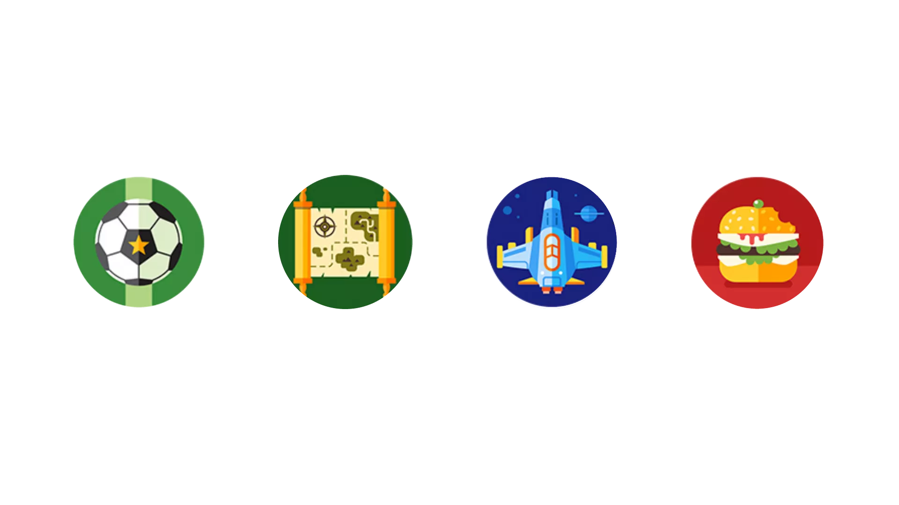

SPORTS
Life Style
SCIENCE
FOOD
A lifestyle blogger creates content inspired and curated from
their personal interests and daily activities. As such, lifestyle
blogs are oftentimes highly personalized to the author's
location, life stage and experience
blogs explore the scientific process rather than just the
published findings: for example, relationships between
'science and society', the researcher's life,
science communication, and problems of academic life.
Food blogging is a feature of food journalism interlinking a
gourmet interest in food, blog writing, and food photography. Food
blogs are generally written by food enthusiasts often referred to
as a “foodies” and can be used commercially by the blogger to earn
a profit.
EVER DREAM OF BEING
Promrtheus?
Explore...
Sports bloggers are responsible for keeping fans up-to-date with
the latest developments and feature news stories about their
favorite sports teams.